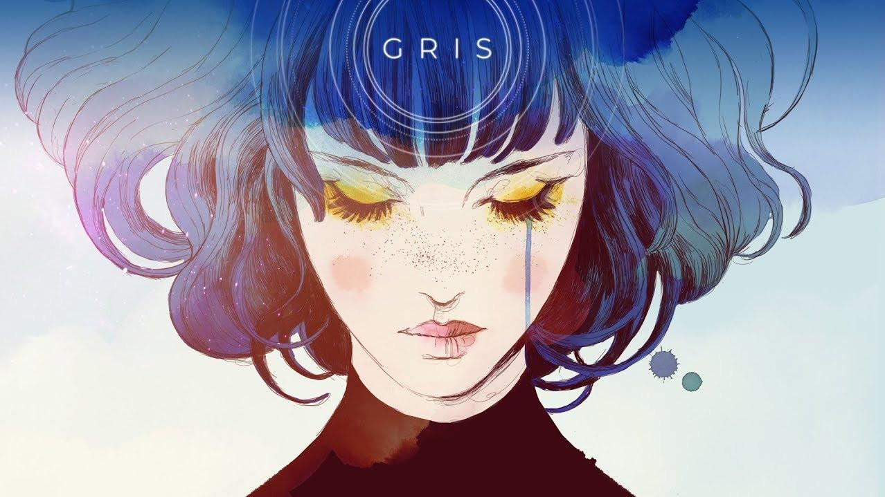
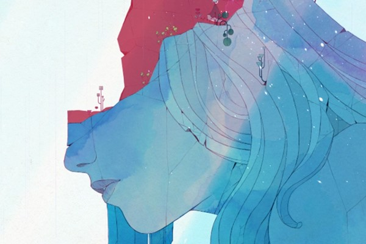

Game espanhol Gris mergulha fundo no universo feminino
A jornada de uma jovem em busca de sua voz convida o jogador a embarcar em uma caminhada de reconstrução e resiliência.
O primeiro título indie do estúdio espanhol Nomada propõe uma experiência emocional e sentimental pelos caminhos do íntimo da protagonista em meio a plataformas e puzzles. Sem diálogos, contextualização da história através de um narrador ou mapa que revele direções e objetivos dentro do mundo, toda a jornada é traçada na base do instinto. Assim é Gris. A mágica está na subjetividade, no significado que cada jogador terá com a sua jornada solitária.
O jogo começa com a personagem experimentando uma dor profunda, que leva embora sua voz e a deixa seu mundo aos pedaços. De início, o cenário é cinza e desértico em tom pós-apocalíptico, em que a jovem escala as estátuas femininas quebradas pelo caminho.
Não se trata de uma jogabilidade desafiadora, nem cenários perigosos, repletos de inimigos e perigo de morte. Gris exige mais do raciocínio para desvendar os quebra-cabeças, recuperar estrelas para reconstruir constelações e ultrapassar os obstáculos do cenário utilizando as habilidades que conquista com seu vestido.
O jogador passa a maior parte do tempo envolvido nessa longa caminhada de autodescoberta. A arte aquarela e trilha sonora imersiva evocam a profunda sensação de solitude. É fácil entrar nesse mundo e fazer parte dele.Tais aspectos e o design da personagem me lembraram a experiência que tive com Journey. Um jogo igualmente belo que também propõe uma jornada solitária. Enquanto Journey se aproxima de uma experiência espiritual e há a possibilidade de agregar um companheiro à jornada, Gris pende mais para o íntimo feminino e é fundamentalmente solitária.
Como se trata de uma perspectiva emocional da personagem, a transição de cores em cenários revelam sempre um novo cantinho da mente de Gris e um novo estágio de evolução. Os cenários que habitam as profundezas são sempre escuros e sombrios. Ela deve iluminar esses caminhos e destravar portais para mundos mais coloridos logo acima. A diversão a mais são as mudanças de gravidade no jogo, que exigem uma boa cognição para coordenar a personagem em um mundo “invertido”.
Os monstros perseguem Gris como fantasmas do passado e sentimentos ruins como a ansiedade e depressão. Não há poderes para enfrentá-los através de lutas. No começo é apenas possível fugir deles. Algum tempo depois se descobre que é possível usar o dano que eles causam em nosso favor para alcançar objetivos.O arco narrativo da personagem é quando ela acaba se deparando com o monstro mais temido: ela mesma. Mas não se trata de um chefão a ser combatido. É uma revelação de um contato mais íntimo com a própria essência, uma descoberta. Um olhar intenso sobre si.
As estátuas quebradas, alusões à Afrodite, não só representam a potência enquanto ser feminino, mas os eventos que podem quebrar nosso interior. É unicamente a voz, perdida outrora, que pode retornar com a força de cura e restauração.Gris ensina a ter um olhar mais generoso e carinhoso sobre nós mesmas, e nos convida a fazer as pazes com nossa história e reconstruir nossos pedacinhos de uma maneira divertida e sensível.